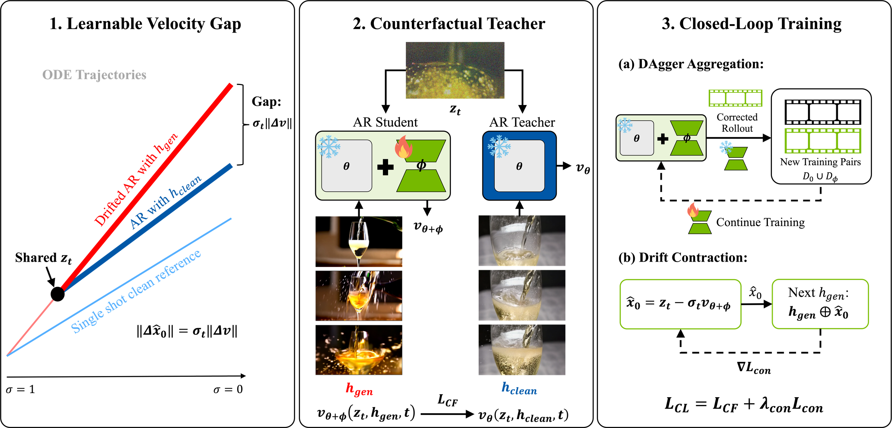
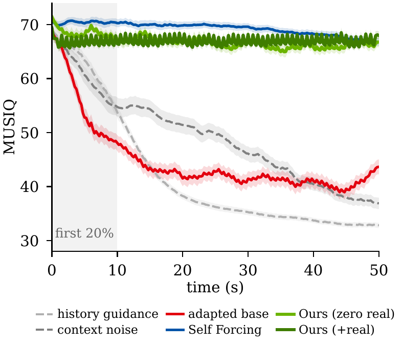

Clean Forcing: Drift-Resistant Autoregressive Video Diffusion with a Frozen Base
Abstract
Autoregressive (AR) video diffusion models generate streaming video of arbitrary length by conditioning each new chunk of frames on those already generated. However, they suffer from exposure bias, where a model trained on clean context must continue from its own imperfect outputs, and errors compound until quality collapses within seconds (drift). Existing methods either require cluster-scale base retraining, apply training-free inference corrections with inconsistent results, or train frozen-base correctors for sampling and cache errors. We instead find that drift is largely deterministic and therefore learnable, as holding the noisy state fixed while varying only the history reveals a counterfactual velocity gap that is ~95% systematic across noise seeds.
Based on this observation, we introduce Clean Forcing, which trains a 5.9M-parameter LoRA corrector on the frozen base model to regress this gap, with a closed-loop stage that adds DAgger-style aggregation and a drift-contraction objective to expose the corrector to its own rollouts. Because the clean histories can be the base model's own single-shot generations, training needs no real videos, and the merged corrector adds no inference cost. In 50 s text-to-video generation, Clean Forcing reduces Δ-drift from +11.3 to +1.65 without real video and to −0.16 with 40 real clips, improving on the best published result of +3.57 with over 150× less data. Extensive experiments demonstrate that Clean Forcing outperforms prior methods in aesthetic quality and data efficiency with reduced drift for long-horizon video generation.
Method

(1) At the same noisy state zt, a drifted history hgen and a clean history hclean induce different velocities. About 95% of this gap is systematic across noise seeds, so it is learnable. (2) A LoRA student on the frozen base, conditioned on hgen, learns to match the frozen teacher's prediction under hclean at the same state. The clean histories can be the base model's own single-shot generations. (3) Closed-loop training adds DAgger aggregation over the corrector's own rollouts and a drift-contraction loss that backpropagates the next chunk's error through each committed prediction. At deployment the LoRA merges into the base weights.
Long-Horizon Results

Per-frame quality over 50 s (mean MUSIQ ± SEM, 128 held-out MovieGen prompts). The adapted base and the training-free heuristics decay within about 15 s, while both Clean Forcing variants stay flat, on a frozen base trained on a single GPU in about a day.
Method comparisons over 50 s
Top row: adapted base, context noising, history guidance. Bottom row: Self Forcing, Clean Forcing (zero real videos), Clean Forcing (+40 real clips). Same prompt and seed in every tile.
“champagne is poured into a glass… bubbles rising rapidly”
“a grand old mansion… spiral staircase”
“a vintage mechanical clock…”
“a mother bird tenderly feeding her chicks in a cozy nest…”
“a serene lakeside cabin…”
Transfer to Other Bases
Wan2.1-14B (10× larger), same recipe
Independently trained Causal-Forcing base, no per-model tuning
Other autoregressive world models
HY-WorldPlay (5B, camera-controlled) and OmniDreams (2B, action-conditioned driving), shown late in the rollout where the base drifts. These hosts use a reduced correction strength: 0.5α*(t) for HY-WorldPlay and 0.25α*(t) for OmniDreams.
BibTeX
@article{wang2026cleanforcing,
title={Clean Forcing: Drift-Resistant Autoregressive Video Diffusion with a Frozen Base},
author={Wang, Wenqing and Shin, Joonghyuk and Tremblay, Jonathan and Song, Chan Hee and Fu, Yun},
journal={arXiv preprint},
year={2026}
}